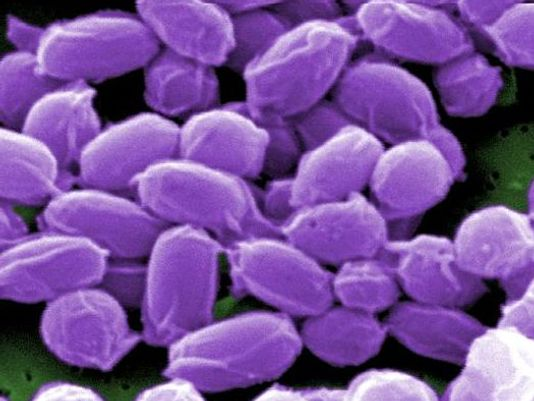
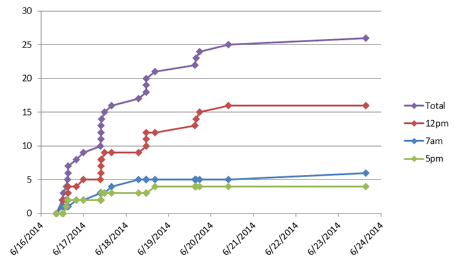
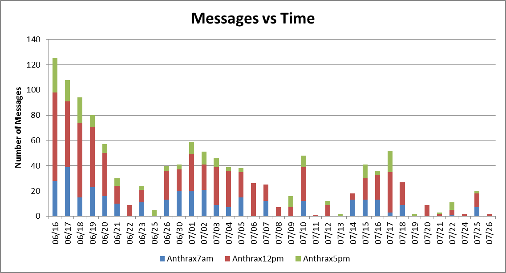
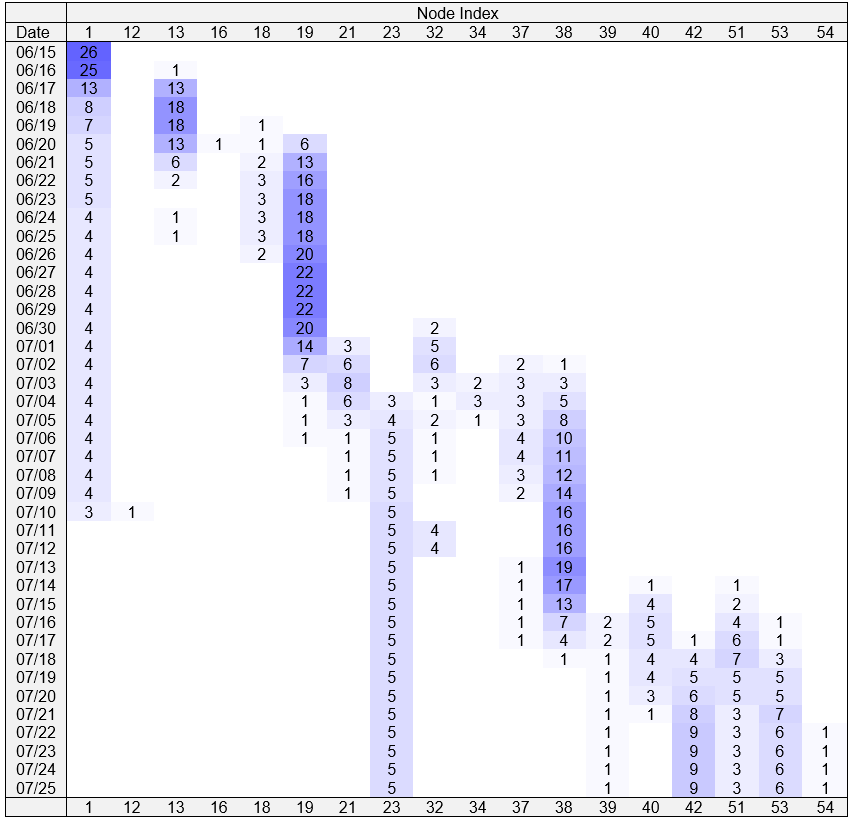
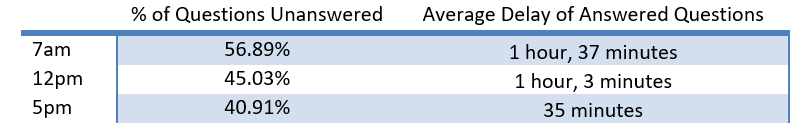
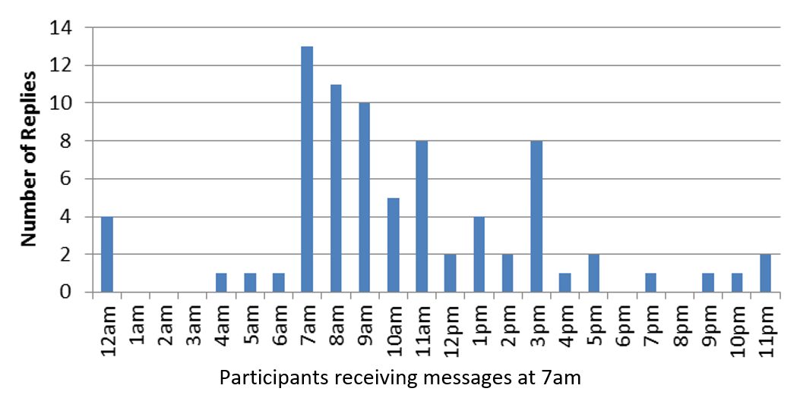
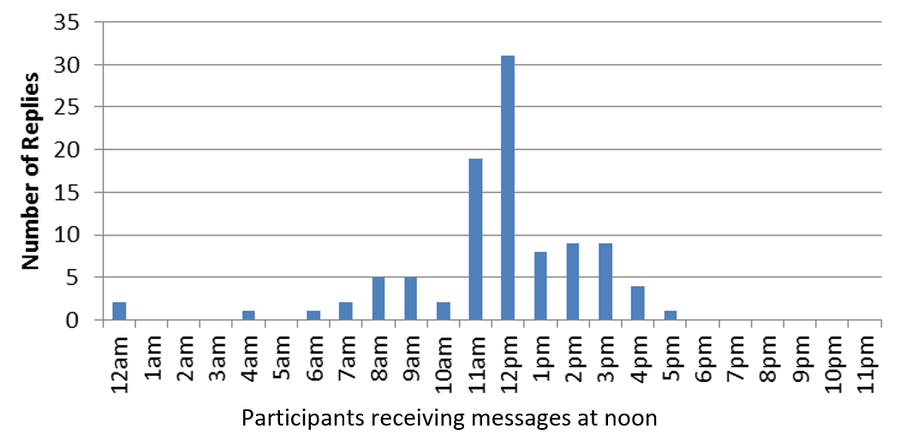
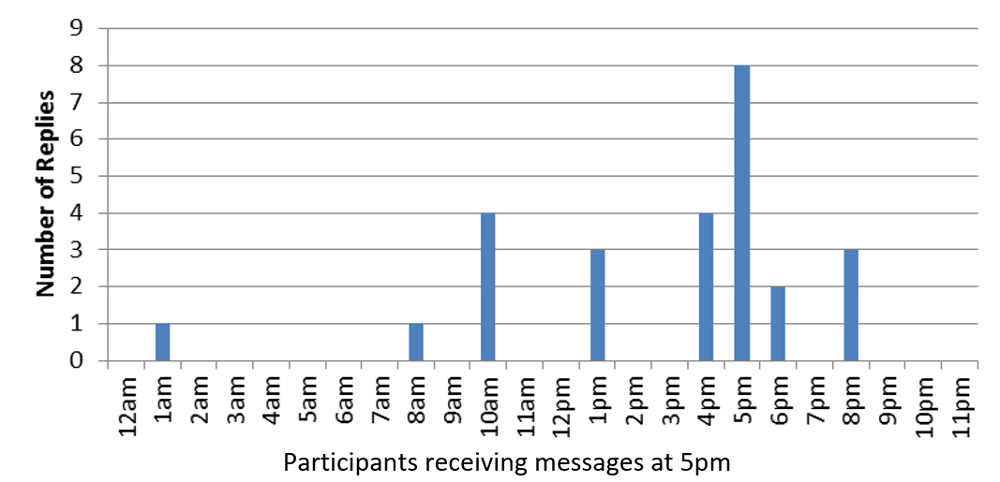

Back to all projects
Back to all projects
Division of Strategic National Stockpile Anthrax Vaccination Campaign
The goal of this campaign was to evaluate the feasibility of guiding participants through their anthrax vaccination protocol via a campaign of SMS messages, and the utility of the CMS in the deployment and monitoring of such a campaign. The vaccination protocol was developed by OPHPR, and Cell Podium extended the functionality of the CMS to support the vaccination campaign requirements, which differed from previous OPHPR campaign requirements.

A pilot vaccination campaign ran from June 16th to July 25th, during which time 26 participants involved in the design of the protocol enrolled. Each participant was able to specify 7am, 12pm, or 5pm as the preferred time when messages were sent to her/him. The CMS transmitted to each participant the messages in the protocol (Figure 1) at the time specified by the protocol relative to the participant’s date of enrollment and preferred time of messaging. Cell Podium tracked the progress of the campaign and submitted weekly reports and conference call updates with Dr. Amy Valderrama of OPHPR/DSNS and her associates at CDC and the Oak Ridge Associated Universities (ORAU).

Figure 1. Accumulation of enrollments over time (total, and per broadcast time preference).
Implementation
The translation of the design of the vaccination protocol to the design of the campaign was straight-forward. All the major functionality of the campaign was accounted for in the design. Several issues in the design of the protocol were addressed when the protocol was programmed into the CMS.
- The CMS had to respond instantly to the text message “info” or “help” sent by any participant without changing the participant’s position in the protocol (the original protocol specified the response as the second and third messages of the protocol, forcing the sender back to the start of the protocol).
- The protocol implied that two messages (#24 and #43), each serving as a point of convergence of two protocol paths, might have to be sent before the preceding message.
- The campaign had to continue even if a participant did not answer questions. The CMS had to assume a default response after a specified waiting period, and correctly handle tardy responses submitted after the waiting period and differing from the default response.
Analytics
The anthrax protocol SMS campaign pilot completed successfully. Apart from the issues mentioned above, all participants received their messages at the appropriate times, and the responses received were interpreted correctly. The CMS logs all campaign activity, including incoming and outgoing messages. Analytics, derived from these logs, reveal salient participant behavior.

Figure 3. Campaign message traffic (traffic per day).
Enrollment activity (Figure 3) indicates that more participants preferred to receive their messages at noon than at 7am or 5pm. Message traffic initially tracks the enrollment activity (6/16-20 in Figure 3). A lull in traffic starting on 6/22 (resulting from the protocol relative to the dates of enrollment) concerned protocol developers that participants might be expecting to receive more messages. Consequently, a one-time reminder to participants that they are still enrolled was sent on 6/26. The spike on 7/25 represents the mass-broadcast indicating the end of the campaign. Enrollment (Figure 3) and message traffic (Figure 4) are frequently collected mobile messaging analytics but these give little insight into how participants advance through a complicated protocol. For this campaign, we created a new mobile messaging statistic: a heat map of message traffic per day of campaign as a function of protocol node (Figure 4). The heat map illustrates that participants tended to cluster around protocol nodes containing questions, particularly 13, 19, and 38, indicating a delay in answering. The cluster starting at 6/30 represents participants moving out of node 19, while the cluster starting with 7/15 represents participants moving out of node 38.

Figure 3. Campaign message traffic (traffic per day).

Figure 4. Percentage of unanswered questions, and average delay of answers, by campaign.
  
Figure 5. Response times to questions asked of participants.
As previously indicated, when asked a question by the protocol (e.g., nodes 13, 19, and 38), participants were given 48 hours to reply. If a participant did not answer after 48 hours from having been asked a question, the CMS would assume a default answer. The waiting period and default answer, both configurable in the CMS for each question, ensure that participants progress in a timely manner through the protocol. On average, campaign participants answered 53% of the protocol questions they were asked, at an average of 66.5 minutes from receiving the question, and the CMS applied the default answer (after the timeout period) to the remaining 47% of questions asked. Participants receiving messages at 5pm were quicker to respond to more questions that participants receiving messages at 7am or noon (Figure 4, Figure 5). The protocol has three endpoints:
- node 23 through which five participants exited the protocol because they had not received their second anthrax vaccine,
- node 42 through which nine participants exited the protocol because they had not received their last anthrax vaccine,
- nodes 53 and 54 through which seven participants exited the protocol because they completed it having recently experienced throat closing, trouble breathing, or swelling of tongue, face or mouth, and
- node 51 through which five participants completed the protocol without having recently experienced the aforementioned symptoms.